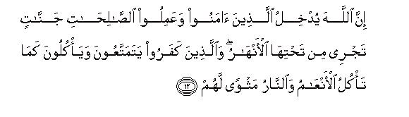
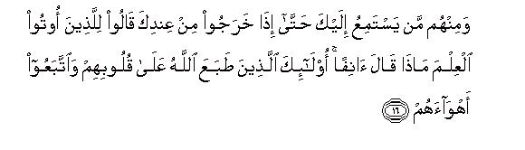
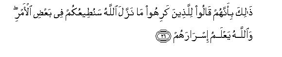

بسم الله الرحمن الرحيم
Sayyid Abul Ala Maududi - Tafhim al-Qur'an - The Meaning of the Qur'an
 47.
Surah Muhammad (The Praised One)
47.
Surah Muhammad (The Praised One)
The Surah derives its name from the sentence wa amanu bi-ma nuzzila ala Muhammad-in of verse 2, thereby implying that it is the Surah in which the holy name of Muhammad (upon wham be Allah's peace and blessings) has occurred. Besides, it has another well known name "al-Qital" also, which is derived from the sentence wa dhukira fi-hal-qital of verse 20.
The contents of this Surah testify that it was sent down after the hijrah at Madinah at the time when the fighting had been enjoined, though active fighting had not yet been undertaken. Detailed arguments in support of this view have been given in E. N. 8 below.
The conditions at the time when this Surah was sent down were such that the Muslims were being made the target of persecution and tyranny in Makkah in particular and in Arabia in general, and life had become miserable for them. Although the Muslims had emigrated to the haven of Madinah from every side, the disbelieving Quraish were not prepared to leave them alone and let them live in peace even there. Thus, the small settlement of Madinah was hemmed in by the enemy, who was bent upon exterminating it completely. The only alternative left with the Muslims were that either they should surrender to the forces of ignorance, giving up their mission of preaching the true Faith, or even following it in their private lives, or should rise to wage a war at the cost of their lives to settle finally and for ever whether Islam would stay in Arabia or the creed of ignorance. On this occasion Allah showed the Muslims the same way of resolution and will, which is the only way for the true believers. He first permitted them to fight in Surah Al Hajj 39 and then enjoined fighting in Al Baqarah 190. But at that time everyone knew fully well what it meant to wage a war in those conditions. There were only a handful of Muslims in Madinah, who could not muster even a thousand soldiers; yet they were being urged to take up the sword and clash against the pagan forces of the whole of Arabia. Then the kind of the weapons needed to equip its soldiers for war could hardly be afforded by the town in which hundreds of emigrants were still homeless and unsettled even by resort to starving its members at a time when it had been boycotted economically by the Arabs on all sides.
Such were the conditions when this Surah was revealed. Its theme is to prepare the believers for war and to give them preliminary instructions in this regard. That is why it has also been entitled al-Qital. It deals with the following topics:
At the outset it is said that of the two groups confronting each other at this time, one has refused to accept the Truth and has become an obstruction for others on the way of Allah, while the other group has accepted the Truth which had been sent down by Allah to His servant, Muhammad (upon whom be Allah's peace and blessings). Now, Allah's final decision is that He has rendered fruitless and vain all the works of the former group and set right the condition and affairs of the latter group.
After this, the Muslims have been given the initial war instructions they have been reassured of Allah's help and guidance: they have been given hope for the best rewards on offering sacrifices in the cause of Allah and they have been assured that their struggle in the cause of the Truth will not go to waste, but they will be abundantly rewarded both in this world and in the Hereafter.
Furthermore, about the disbelievers it has been said that they are deprived of Allah's support and guidance: none of their designs will succeed in their conflict with the believers, and they will meet a most evil fate both in this world and in the Hereafter. They thought they had achieved a great success by driving the Prophet of Allah out of Makkah, but in fact by this they had hastened their own doom.
After this, the discourse turns to the hypocrites, who were posing to be sincere Muslims before the command to fight was sent down, but were confounded when this command actually came down, and began to conspire with the disbelievers in order to save themselves from the hazards of war. They have been plainly warned to the effect that no act and deed is acceptable to Allah of those who adopt hypocrisy with regard to Him and His Prophet. There, the basic issue against which all those who profess the Faith are being tried is whether one is on the side of the Truth or Falsehood, whether one's sympathies are with Islam and the Muslims or with disbelief and the disbelievers, whether one keeps one's own self and interests dearer or the Truth which one professes to believe in and follow. One who fails in this test is not at all a believer; his Prayer and his Fasting and his discharging of the zakat deserve no reward from Allah.
Then the Muslims have been exhorted not to lose heart for being small in numbers and ill equipped as against the great strength of the disbelievers: they should not show weakness by offering peace to them, which might still further embolden them against Islam and the Muslims, but they should come out with trust in Allah and clash with the mighty forces of disbelief. Allah is with the Muslims: they alone shall triumph; and the might of disbelief will be humbled and vanquished.
In conclusion, the Muslims have been invited to spend their wealth in the cause of Allah. Although at that time they were economically very weak, the problem that they confronted was the very survival of Islam and the Muslims. The importance and delicacy of the problem demanded that the Muslims should not only risk their lives for safeguarding themselves and their Faith from the dominance of disbelief and for exalting Allah's Religion but should also expend their economic resources as far as possible in the preparations for war. Therefore, they were clearly warned to the effect. Anyone who adopted a niggardly attitude at the time, would not, in fact, harm Allah at all, but would result in his own destruction, for Allah does not stand in need of help from men. If one group of men shirked offering sacrifices in the cause of His Religion, Allah would remove it and bring another group in its place.

In the name of Allah, the Compassionate, the Merciful.

[1-3] Those who disbelieved1 and debarred (others) from Allah's Way.2 Allah rendered their works fruitless.3 As for those who believed, and did' good works, and accepted that which has been sent down to Muhammad4 and it is the very Truth from their Lord-Allah removed their evils from them5 and set their condition right.6 This is because the disbelievers followed falsehood and the believers followed the Truth which has come from their Lord. Thus does Allah make the people aware of their true state.7
[4-6] Therefore, when you meet the disbelievers in the battle-field, first smite their necks. Then, when you have crushed them completely, bind the prisoners tight. After that (you have the choice) whether you show them favor or accept ransom, until the war lays down its arms.8 So shall you do. Had Allah willed, He would Himself have dealt with them. But (He has adopted this way so that) He may test some of you by means of others.9 And those who are killed in the way of Allah, Allah will never let their deeds go waste.10 He will guide them, set their condition right, and will admit them to the Paradise with which He has acquainted them.11

[7-12] O you who have believed, if you help Allah, Allah will help you12 and make your footsteps firm. As for those who have disbelieved, for them is destruction13 and Allah has rendered their deeds astray, because . they : disapproved of what Allah has sent down.14 Therefore, Allah rendered their deeds fruitless. Have they not traveled in the earth that they could see the end of those who had gone before them? Allah destroyed them utterly and the disbelievers are destined for a similar end.15 This is because Allah is the Protector and Helper of the believers and the disbelievers have no protector and helper.16 Allah shall admit those who have believed and done good works into Gardens underneath which rivers flow. As for the disbelievers, they are only enjoying the temporary life of this world, and eating as the animals eat,17 and their final abode is Hell.
[13-15] O Prophet, how many habitations have there been that were much stronger in power than this habitation of yours that has expelled you. We destroyed them so utterly that there was none to save them.18 Can it ever be that he who is on a clear guidance from his Lord, be like those whose evil deed has been made seem fair to them, and who are following their lusts?19 The Paradise that has been promised to the righteous is such that canals will be flowing in it of pure water,20 and canals will be flowing in it of milk of unchanged flavor,21 and canals will be flowing in it of wine which will be delightful to the drinkers,22 and canals will be flowing in it of honey, clear and pure.23 In it there will be fruits of every kind for them and forgiveness from their Lord.24 (Can the person who will be admitted to this Paradise) be like those who will dwell in Hell for ever and who will be given to drink boiling water that will cut their bowels into pieces?

[16-18] There are some among them who give ear to what you say, and then when they leave you, they ask those who have been blessed with knowledge, "What did he say just now?"25 These are they upon whose hearts Allah has set a seal, and who are following their lusts.26 As for those who have received guidance, Allah increases their guidance27 and grants them their due share of piety.28 Do they now only await Resurrection that it should come upon them suddenly?29 Its portents indeed have already come.30 But when it does overtake them, what chance will be there for them to accept admonition?
[19] Therefore, O Prophet, know it well that there is none worthy of worship but Allah, and ask forgiveness for your fault and for the believing men and women, too,31 for Allah is aware of your busy movements and also of your resting places.
[20-25] Those who have believed, were saying, "Why is not a Surah sent sent down (to enjoin fighting)?" But when a decisive Surah was sent down in which fighting had been mentioned, you saw those in whose hearts was a disease, looking towards you like the one under the shadow of death.32 Alas for them! (On their tongue is) the promise of obedience and good works, but if they had proved true in their compact with Allah when the final Command was given, it would have been better for them. Now, what else can be expected of you than this that if you turned about,33 you would again spread mischief in the land and break asunder the ties of blood?34 These are they whom Allah has cursed and made them deaf and blind. Have they not pondered over the Qur'an, or are there locks upon their hearts?35 The fact is that those who turned back, after guidance had become clear to them, for them Satan has made this way easy and prolonged for them the prospects of false hopes.

[26-28] That is why they said to those who showed aversion to what Allah had revealed, "We shall obey you in some matters."36 Allah knows their secret affairs too well. Then, how shall it be when the angels take their souls, and take them away, smiting their faces and their backs?37 that made Allah angry, and hated to adopt the way of His pleasure. So, He rendered all their works fruitless.38
[29-31] Do those in whose hearts is a disease think that Allah will not expose the impurity of their hearts? If We will, We can show them to you and then you may recognize them by their faces. But you will certainly know them from the manner of their speech. Allah is fully aware of all your actions. We shall certainly put you to the test in order to appraise your state and to see who among you are struggling strenuously and enduring patiently.
[32-38] Those who disbelieved and hindered (others) from Allah's way and disputed with the Messenger, after the Right Way had become clear to them, can in no way harm Allah, but Allah indeed will render all their works vain.39 O you who have believed, obey Allah and obey the Messenger and let not your works end in futility.40 As for those who have disbelieved, and hindered (others) from Allah's Way and have died disbelieving, Allah will never pardon them. Therefore, do not be faint-hearted, and do not beg for peace,41 for you will surely gain the upper hand. Allah is with you and will never let your works be wasted. The life of this world is only a sport and a pastime.42 If you believe and follow the way of piety, Allah will give you your rewards, and will not ask of you your possessions.43 If ever He asks of you your possessions, and demands all of them, you would be niggardly, and He would bring your malice out.44 Look, you are being called upon to expend in Allah's Way. Yet some of you are being stingy, whereas the one who is stingy is, in fact, being stingy only to himself. Allah is Self-Sufficient. It is you who are the needy. If you turn away, Allah will replace you by another people, and they will not be like you.
1"Those who disbelieved": Those who refused to accept the teachings and guidance presented 'by Muhammad (upon whom be Allah's peace and blessings).
2The verb sadd (from which saddu of the original is derived) is used both as a transitive and as an intransitive verb in Arabic. Therefore, the sentence would mean "they themselves refrained from adopting Allah's Way" as well as they prevented others from adopting this way."
There are several ways of preventing others from adopting Allah's Way:
(1) That one should forcibly prevent another from believing;
(2) that one should so persecute the believers that it should become difficult for them to remain steadfast on the Faith and for others to embrace the Faith in view of the dreadful conditions;
(3) that one should mislead the people against the Religion and its followers in different ways and create doubts in the hearts so that the people may become suspicious of the Religion itself. Besides, every disbeliever prevents others from the way of Allah in the sense that he brings up his children on the way of disbelief, and then it becomes difficult for his future generation to give up the ancestral faith and accept Islam. Likewise, every unbelieving society is an obstruction to the Way of Allah, for it creates obstacles in the way of the progress of the Faith by its system of education and training, its government and its customs and prejudices.
3The words adalla a 'mala-hum (led their deeds astray, let them go to waste) are very comprehensive in meaning. Their one meaning is: Allah deprived them of the grace that their efforts and their labors should be spent in the right way: now, whatever they do, they will do that for wrong aims and objects in wrong ways: all their endeavors will be directed to the way of error and deviation - instead of guidance. Their second meaning is: The works that they have been performing as pious deeds, e.g. guardianship of the Ka'bah, entertaining the guests, treating the kindred well, and such other works, which are counted among religious services and noble actions morally, were rendered fruitless by Allah; they will get no reward for them, for when they refuse to accept Tauhid and to adopt the way of Allah's service and worship and stop others also from adopting Islam none of their works can be acceptable to Allah. The third meaning is Allah rendered fruitless an$ vain the efforts they were making to obstruct the way of the Truth and to keep their creed of disbelief alive in Arabia as against the Prophet Muhammad (upon whom be Allah's peace and blessings): all their designs and endeavors now are aimless: they will never attain their goals by these designs.
4Although after saying alladhina amanu (those who believed) there was no need to say wa amanu bi-ma nuzzila 'ala Muhammad-in (and accepted that which has been sent down to Muhammad), for belief by itself implies believing in the Holy Prophet Muhammad and in the teachings sent down to him, yet making a separate mention of it is particularly meant to assert this: After the appointment of Muhammad (upon whom be Allah's peace and blessings) to Prophethood, a person's belief in Allah and the Hereafter and the former Messengers and the Books cannot be beneficial until he also believes in him and the teachings brought by him. This explanation was necessary because after the emigration, the Muslims had also to deal with those people, who recognized and accepted all the requirements of the Faith but refused to acknowledge and accept the Prophethood of the Holy Prophet Muhammad (upon whom be Allah's peace and blessings).
5This has two meanings:
(1) That Allah wiped off from their record all those sins which they had happened to commit in the pre-Islamic days of ignorance: now, they will not at all be held accountable for them; and
(2) that Allah removed from them the evils of creed, thought, morals and action in which they were involved. Now their minds were changed; their creed and ideas were changed; now there was faith in their hearts instead of ignorance and righteous acts instead of the immoral evil.
6This also has two meanings:
(1) That Allah changed their previous condition and put them on the right path and improved and bettered their lives for them; and
(2) that Allah has taken them out of the condition of weakness and helplessness and oppression in which they were placed till then; now He has created for them such conditions in which instead of being persecuted they will defend themselves against the oppressors; instead of living as subjects, they will now live and order their lives as free people, and will have the upper hand instead of being subdued and suppressed.
7That is, "He makes both the parties aware of their positions. One party insists on following falsehood; therefore, Allah has brought all its endeavors to naught: and the other party has adopted obedience of the Truth; therefore, Allah has purified it of its evils and corrected its condition."
8The words of this verse as well as the context in which it occurs clearly show that it was sent down after the revelation of the command for fighting and before the actual fighting began. The words, "When you meet the disbelievers in the battlefield ...", indicate that the fighting has not yet taken place and the Muslims are being instructed that when it does take place, what they should do.
The words of verse 20 below testify that this Surah was sent down at a time when the command for fighting had already been given in Surah AI-Hajj: 39 and AI-Baqarah: 190, and the hypocrites of Madinah and the people of the weak faith had been so upset that it seemed as if they were actually facing death.
Besides, vv. 67-69 of the Surah AI-Anfal also testify that this verse had been sent down before the Battle of Badr. There it has been said:
"lt does not behoove a Prophet to have captives until he has crushed down the enemies in the land. You desire the gains of this world, but Allah desires the Hereafter, and Allah is All-Powerful, All-Wise. Had not a decree already been issued by Allah, you would have incurred a severe chastisement in consequence of what you have done. So eat of what you have taken as spoils because it is lawful and pure. "
A careful study of this passage, especially of its italicized portions, shows that what had displeased Allah on this occasion was that before crushing down the enemy completely in the Battle of Badr, the Muslims had started taking the enemy soldiers as captives, whereas the instruction given them in Surah Muhammad before the actual fighting was this: "When you have crushed them completely, then bind the captives tight. " However, as the Muslims had been permitted, among other things in Surah Muhammad, to accept ransom from the prisoners, Allah declared the money taken from the captives of Badr as lawful and did not punish them for that. The words "Had not the decree already been issued by Allah." are clearly pointing to the fact that the command for permission to accept ransom had already been given in the Qur'an before this event, and obviously, there is no other verse in the Qur'an beside this verse of Surah Muhammad, which contains this command. Therefore, it will have to be admitted that this verse had been sent down before the above-cited verse of the Surah AI-Anfal. (For explanation, see E. N 49 on AI-Anfal).
This is the first verse of the Qur'an in which preliminary instructions have been given about the laws of war. Below is given a resume of the injunctions that are derived from this verse and the Holy Prophet's and his Companions' practice according to it and the juristic inferences as based on this verse and the Sunnah:
(1) The real aim of the Muslim army in war is to break the fighting power of the enemy till it is crushed and the war lays down its arms. Under no circumstances, should the Muslim's lose sight of this aim and start taking the enemy soldiers as captives. Captives should be taken after the enemy has been completely crushed and its numbers thinned down. The Arabs have been so instructed at the outset lest in the greed for ransom and taking slaves they should forget and overlook the real aim of the war.
(2) About the prisoners taken in war it has been said: "You have the option whether you show them favor or accept ransom from them. " This gives the general law that the prisoners of war should not be put to death. Hadrat `Abdullah bin `Umar, Hasan Basri, `Ata' and Hammad bin Abi Sulaiman favour this view, which is quite valid. They say that a man can be killed only during the war. When the war is over and one has been made a prisoner, it is not lawful to kill him, Ibn Jarir and Abu Bakr alJassas have related that Hajjaj; bin Yusuf handed over one of the prisoners of war to Hadrat `Abdullah bin `Umar and commanded him to put him to death. He refused to obey and cited this verse and said: "We are not allowed to kill a man when he is a prisoner." Imam Muhammad in As-SiyaT al-Kabir also has related that `Abdullah bin 'Amir had commanded Hadrat `Abdullah bin `Umar to kill a prisoner of war, and he had refused to obey the command for this reason.
(3) But since in this verse it has neither been clearly forbidden to kill the prisoner the -Holy Prophet understood this intention of Allah's Command, and also acted accordingly, that if there was a special reason for which the ruler of an Islamic government regarded it as necessary to kill a particular prisoner (or prisoners), he could do so. This is not the general law, but an exception to it, which would be applied only when necessary. Thus, the Holy Prophet put to death only `Uqbah bin Abi Mu'ait and Nadr bin al-Harith from among the 70 prisoners taken at Badr, and only the poet Abu `Azzah from the prisoners taken at Uhud. Since the Bani Quraizah had surrendered on the condition that they would accept whatever decision Hadrat Sa`d bin Mu'adh would give in their regard, and he had decreed that all the males of the Quraizah should be killed, the Holy Prophet had them executed. From among the prisoners taken at Khaiber only Kinanah bin Abi al-Huqaiq was put to death because of his violating the agreement. At the conquest of Makkah, the Holy Prophet commanded in respect of only a few particular persons from among all the inhabitants of Makkah that any one of them who was captured should be put to death. Apart from these exceptions, the Holy Prophet never killed prisoners of war, and the same also continued to be the practice of the righteous Caliphs. During their times also killing of prisoners of war was rare, which was resorted to only for a special reason. Hadrat, `Umar bin `Abdul `Aziz also during his caliphate put to death only one prisoner of war for the reason that he had persecuted the Muslims very cruelly. On this very basis the majority of the jurists have held the view that the Islamic government can put a prisoner to death if necessary. But it is for the government to take such a decision; every soldier is not permitted to kill any prisoner he likes. However, if there is the danger of a prisoner's running away or of his committing a dangerous mischief, the guard can kill him. In this connection, the jurists of Islam have also made three other points: (a) That if a prisoner accepts Islam, he cannot be killed; (b) that the prisoner can be killed only as long as he is in the government's custody; if he has been allotted to, or given in somebody else's possession by sale, he cannot be killed; and (c) that if the prisoner has to be killed, he should be killed in a straightforward way; he should not be tortured to death
(4) The general command that has been given about the prisoners of war is: "Show them favor, or accept ransom from them. " Favor includes four things: (a) That they should be treated well as prisoners; (b) that instead of killing them or keeping them in captivity for lifetime, they should be handed over to the individual Muslims as slaves; (c) that they should be put under jizyah and trade dhimmis; and (d) that they should be set free without ransom.
There are three ways of ransoming them: (a) That they should be set free on payment of a ransom; (b) that they should be set free after taking some special service from them; and (c) that they should be exchanged for the Muslim prisoners of war who are in the possession of the enemy. The Holy Prophet and the Companions at different times acted in one or the other way as the occasion demanded. The Divine Law has not bound the Islamic government to act in only one particular way. The government can take any action it deems appropriate on a particular occasion.
(5) The practice of the Holy Prophet and the Companions confirms that as long as a prisoner of war is in the government's custody, the government will be responsible for his food and clothing, . and his treatment if he is ill or wounded. Islamic Law does not permit prisoners to be kept without food or clothing, or be subjected to torture. On the contrary, instructions also have been given to treat them well and generously, and precedents of this very practice are found in the Sunnah. The Holy Prophet distributed the prisoners of Badr in the houses of different Companions and gave the instruction: "Teat these prisoners well." One of those prisoners, Abu 'Aziz, has reported: "The Ansar Muslims, in whose house I was kept, gave me bread morning and evening, but as for themselves they had only dates to eat. " About another prisoner; Suhail bin 'Amr, the Holy Prophet was told: "He is a fiery speaker, and has been making speeches against you: please have his teeth broken. " The Holy Prophet replied: "If I have his teeth broken, Allah will break my teeth, although I am a Prophet." (Ibn Hisham). When Thumamah bin Uthal, the chief of Yamamah, was brought as a prisoner, he was provided with good food and milk on the Holy Prophet's orders as long as he remained a captive. (Ibn Hisham). The same was the practice in the time of the Companions. No precedent is found when a prisoner might have been mistreated in their time.
(6) Islam has not permitted that the prisoners be kept in captivity for ever so that the government may subject them to forced labor as long as it likes. If they are not exchanged for other prisoners of war, or ransomed, the method enjoined of doing them favor is that they should be made slaves and given in possession of individuals, and their masters instructed to treat them well This method was acted upon during the time of the Holy Prophet as well as of the Companions, and the jurists of Islam have unanimously upheld it as permissible. In this regard, it should be borne in mind that a person who might have accepted Islam before being taken as prisoner, and then is somehow made a prisoner, will be set free, but the acceptance of Islam by a person who accepts it after being taken prisoner, or after being given in possession of somebody, will not gain him freedom automatically. A tradition has been related in Musnad Ahmad. Muslim and Tirmidhi on the authority of Hadrat `Imran bin Husain that a person from among the Bani 'Uqail was brought as a prisoner and he said: "I have accepted Islam. " Thereupon the Holy Prophet said: "If you had said this when you were free, you would certainly have attained to success. The same thing was said by Hadrat `Umar: "When a prisoner becomes a Muslim after falling into the hands of the Muslims as a captive, he will not be killed, but will remain a slave." Oh this very point. the jurists of Islam have unanimously ruled that the prisoner who becomes a Muslim after being taken captive cannot escape slavery. (Imam Muhammad, As-Siyar al-Kabir). And this also is quite reasonable. If our law had been that anyone who embraced Islam after being taken a captive, would be set free, no prisoner would be so foolish as not to win his freedom by pronouncing the Kalimah.
(7) The
third manner of doing favor with the prisoners according to the Law
of Islam is that they may be put under jizyah and made dhimmi
subjects of the Islamic state and allowed to live as free citizens
of dar a/Islam (abode of Islam) just like the Muslims. Imam Muhammad
writes in his As-Siyar a/-Kabir: "Any person who can be made a
slave, can also be made a dhimmi and put under jizyah. ¦ At
another place he says: "The ruler of the Muslims has the right
to levy jizyah on than and a tax on their lands and set than
absolutely free. " This method has been practised generally in
the condition when the territory of the people who have been made
prisoners, is' conquered and annexed to the Islamic state. The Holy
Prophet, for instance, practiced this method in the case of the
people of Khaiber, and then Hadrat `Umar followed and practiced it
extensively on the conquest of `Iraq and other territories. Abu
`Ubaid writes in his Kitab al-Amwal: "After the conquest of
`Iraq a deputation of the leading men of that country came before
Hadrat `Umar and submitted: `O Commander of the Faithful, before
this the people of Iran had subdued us: they subjected us to harsh
treatment and committed all sorts of excesses against us. Then, when
God sent you, we became very pleased, and we neither put up any
resistance against you nor participated in the war. Now, we hear
that you want to make us slaves.' Hadrat `Umar replied: `You have
the option either to become Muslims, or accept to pay jizyah and
remain free.' They agreed to pay the jizyah and they were granted
full freedom. " At another place in the same book. Abu `Ubaid
says: Hadrat `Umar wrote to Abu Musa al-Ash'ari: Set free every
farmer and peasant from among the people who have been captured in
the war. "
(8) The fourth favor is that the prisoner be set
free without ransom. This is a special concession that the Islamic
government can give only in case the special conditions of a
prisoner demand it, or when it is expected that the concession will
win the prisoner's gratitude for ever, and help turn him a friend
from an enemy, or a believer from a disbeliever; otherwise,
obviously it would in no way be a wise thing to set free a person of
the enemy camp, who could again return to fight the Muslims. This is
why the Muslim jurists generally have opposed it, and imposed the
condition: "If the ruler of the Muslims finds it expedient to
set the prisoners, or some of them, free as a favor, there is no
harm in doing so." (As-SiyaT al-Kabir). Many precedents of this
are found in the time of the Holy Prophet, and in almost every case
expediency seems to be the reason.
About the prisoners taken at Badr, he said: "If Mut'im bin `Adi were alive, and had spoken to me in respect of these treacherous people, I would have Iet them go for his sake." (Bukhari, Abu Da'ud, Musnad Ahmad). The Holy Prophet said this because when he had returned from Ta'if to Makkah, Mut'im at that time had given him refuge, and his armed sons had escorted him to the Ka`bah. Therefore, he wanted to repay his debt of gratitude in this way.
According to Bukhari, Muslim and Musnad Ahmad, when Thumamah bin Uthal, the chief of Yamamah, was brought as a prisnoner, the Holy Prophet asked him: "Thumamah, what do you say?" He replied: "If I am killed, then such a one would be killed, whose blood has some value: if I am shown favor, then favor would be shown to a person, who appreciates favor; and if you want wealth, ask for it, you will be given it." For three days the Holy Prophet asked him the same thing and he gave the same reply. At last, the Holy Prophet ordered that Thumamah be set free. On attaining freedom, he went to a nearby oasis, washed himself and came back, pronounced the kalimah and became a Muslim, saying: Before this day nobody was more detestable than you and no religion more odious than your religion in my sight, but now for me no man is more lovable than you and no religion more lovable than your religion." Then he went to Makkah for 'Umrah and gave the people of Quraish a notice to the effect: "After this no grain will reach you from Yamamah unless Muhammad (upon whom be Allah's peace) permits it." So, he stopped the grain supply and the people of Makkah had to request the Holy Prophet that he should not stop the supply of grain for them from Yamamah.
From among the prisoners of the Bani Quraizah, the Holy Prophet forgave Zabir bin Bata and 'Amr bin Sa'd (or Ibn Su'da), the former because he had given refuge to Hadrat Thabit bin Qais Ansari in the Battle of Bu'ath, in the pre-Islamic days of ignorance; therefore, he handed him over to Hadrat Thabit that he may repay him for his favor. And he forgave 'Amr bin Sa`d because it was he who was exhorting his tribe not to be treacherous when the Bani Quraizah were committing breach of the trust with the Holy Prophet.
After the Battle of Bani al-Mustaliq, when the prisoners were brought and distributed among the people, the Holy Prophet paid Hadrat Juwairiyah's ransom to the person to whom she was allotted to secure her freedom and then married her himself. At this all the Muslims set their own prisoners free, saying: "Now they have become the Holy Prophet's relatives. " Thus, the prisoners of a hundred families became free. (Musnad Ahmad, Tabaqat Ibn Sa`d, Ibn Hisham).
On the occasion of the treaty of Hudaibiyah, at about dawn, 80 men came from the direction of Tan'im with the intention of launching a sudden attack on the Muslim camp, but were all captured, and the Holy Prophet set all of them free lest it became a cause of war on that critical occasion. (Muslim, Abu Da'ud, Nasa'i, Tirmidhi, Musnad Ahmad).
At the conquest of Makkah, the Holy Prophet forgave all the people of Makkah except only a few men, and did not kill more than three or four of even those who had been made an exception. The whole of Arabia was well aware of what atrocities the people of Makkah had committed against the Holy Prophet and the Muslims; yet the large-heartedness with which he forgave them after attaining complete victory over them, gave the Arabs the satisfaction that they had not been overpowered by a tyrant but by a merciful, affectionate and generous leader. That is why after the conquest of Makkah the Arabian peninsula did not take longer than two years to be completely subdued.
After the Battle of Hunain, when the Hawazin deputation came to secure the freedom of their prisoners, the prisoners had already been distributed. The Holy Prophet called the Muslims together and said: "These people have come with repentance, and I am of the opinion that their men should be rearmed to them. The one who would like to set the prisoner allotted to him free willingly without ransom, should set him free, and the one who would like to take ransom, shall be paid it out of the first income that is received in the Public Treasury." Thus, six thousand prisoners were set free, and those who wanted to take ransom, were given it by the government. (Bukhari, Abu Da'ud, Musnad Ahmad, Tabaqat Ibn Sa'd). This also shows that the government is not authorized to set the prisoners free after they have been distributed; this can be done by the willing approval of those in whose possession the prisoners have been given, or by paying them the ransom.
After the Holy Prophet, precedents of setting the prisoners free as a favor continue to be found throughout the period of the Companions also. Hadrat Abu Bakr set fret Ash'ath bin Qais al-Kindi and Hadrat 'Umar granted freedom to Hurmuzan and the prisoners of Manadhir and Maisan. (Abu 'Ubaid, Kitab alAmwal).
(9) The precedent of setting the prisoners free on payment of the ransom in the time of the Holy Prophet is found only on the occasion of Badr, when the prisoners were set free on payment of one thousand to four thousand dirhams each. (Tabaqat Ibn Sa'd, Kitab al-Amwal). No precedent of this is found in the time of the Companions; and the jurists of Islam have generally disapproved it, for it means that we should take money and set a man free so that he may again rise against us with the sword. But since taking of ransom has been permitted in the Qur'an, and the Holy Prophet also acted according to it once, it is not absoluutely forbidden. Imam Muhammad writes in his As-Siyar al-Kabir that if the need arises the Muslims can free their prisoners on payment of the ransom.
(10) The criterion of freeing a prisoner for a service rendered is also found in connection with the Battle . of Badr. For those of the Quraish prisoners who had no ransom the Holy Prophet imposed the condition that they should teach reading and writing to ten Ansar children each to win their freedom. (Musnad Ahmad, Tabaqat Ibn Sa`d, Kitab al-Amwal.
(11) Several instances of the exchange of prisoners are found in the time of the Holy Prophet. Once he dispatched Hadrat Abu Bakr on an expedition and he brought some captives, including a beautiful woman, who fell to the lot of Hadrat Salamah bin Akwa' . The Holy Prophet urged him to give her back, then sent her to Makkah and had several ' Muslim prisoners released, in exchange for her. (Muslim, Abu Da'ud, Tahawi Kitab al-Amwal of Abi `Ubaid, Tabaqat Ibn Sa`d). Hadrat 'Imran bin Husain relates that once the tribe of Thaqif arrested two men of the Muslims. Some time later, a man of the Bani 'Uqail, who were allies of the Thaqif, was arrested by the Muslims. The Holy Prophet sent him to Ta'if and got both the Muslims released in exchange for him. (Muslim, Tirmidhi, Musnad Ahmad). From among the jurists Imam Abu Yusuf, Imam Muhammad, Imam Shafe`i, Imam Malik and Imam Ahmad hold . the exchange of the prisoners as permissible. A ruling of Imam Abu Hanifah is that exchange should not be practiced, but according to another ruling of his exchange can be practiced. However, there is a consensus that the prisoner who becomes a Muslim should not be handed over to the disbelievers for the purpose of exchange.
This explanation makes it abundantly clear that Islam has formulated a comprehensive code in respect of the prisoners of war, which contains provision for this problem in every age under all sorts of conditions. Those people who take this Qur'anic verse in its simple meaning that the prisoners of war should "either be shown favor and set free or freed for ransom", do not know what different aspects the question of the , prisoners of war has, and what problems it has been creating in different ages and can create in the future.
9That is, "If Allah had only wanted to crush the worshipers of falsehood, He did not stand in need of your help for this. He could have done this through an earthquake or a tempest in no time, But what he wills is that the followers of the Truth among the people should enter into a conflict with the worshipers of falsehood and fight them so that the qualities and characteristics of each are brought out clearly by means of the test and each is given the place and rank that he deserves according to his conduct. "
10It means this: "A person's being slain in the way of Allah does not mean that he lost his life and as far as his person was concerned all his lifework was wasted. It is wrong to think that the sacrifices of the martyrs are not beneficial for themselves but only for those who live after them in the world, and take advantage of their sacrifices. The fact is that even for the martyrs themselves it is a bargain of profit, not of loss at all . "
11This is the profit that the martyrs falling in the way of Allah will gain. Its three grades have been stated:
(1) That Allah will guide them;
(2) that He will set their condition right; and
(3) that He will admit them to the Paradise with which He has acquainted them beforehand.
Guidance here obviously implies guiding to Paradise; setting the condition right implies that before their entry into Paradise, Allah will adorn them with robes of honor and remove every filth which had polluted them in the life of the world; and the third stage means that even in this world they have been told through the Qur'an and the Holy Prophet what kind of Paradise it is that has been prepared for them; when they enter that Paradise they will enter a place with which they will already be familiar and they will come to know that they have been blessed precisely with the same that had been promised to them in the world. "
12"If you help Allah": "If you participate in the work of raising Allah's Word with your life and wealth." But this has a deeper meaning too, which we have explained in E. N. 50 of Surah Al-`Imran above.
13Literally, to 's is to stumble and fall down on the face.
14That is, "They preferred the whims, superstitions, customs and moral perversion of their former ignorance and did not like the teaching that Allah had revealed to guide them to the right way.
15This sentence has two meanings:
(1) The same destruction that was met by those disbelievers now awaits these disbelievers, who are not accepting the invitation of Muhammad (upon whom be Allah's peace and blessings); and
(2) 'the ruin of those people does not end with the torment of the world; the same doom also awaits Them in the Hereafter "
16After being wounded at Uhud when the Holy Prophet was resting in a hill pass with a few Companions, Abu Sufyan shouted: "We have 'Uzza and there is no 'Uzza for you." Thereupon the Holy Prophet told his Companions to respond, saying: "Our Protector and helper is Allah, and you have no protector and helper at all. " This reply of the Holy Prophet was derived from this very verse.
17That is, "Just as an animal cats and does not think where from the food it eats has come, who has created it, and what rights of the creator are imposed on it for providing it with food, so are these people also eating and have no higher values or ideals beyond eating. "
18The Holy Prophet was sorely distressed on leaving Makkah. When he was compelled to emigrate, he had stood facing the city outside it and said: "O Makkah, you are the most beloved city in the sight of Allah, and I have the greatest love for you out of all the cities of Allah; if the polytheists had not driven me out I would never have left you." About this it has been said: "After driving you out of the city the people of Makkah think that they have achieved a great success, whereas, in fact, they have hastened only their own ruin by this evil act." The style of the verse clearly indicates that it must have been sent, down close after the Hijrah.
19That is, "How is it possible that when the Prophet and his followers have been guided by God to a clear and straight path and they have started following it in the light of full knowledge and vision, they should walk along, with those who are still persisting in their ways of ignorance, who regard their deviation as guidance and their evildoing as a praiseworthy thing, and who judge on the basis of their personal desires, and not by argument as to what is the truth and what is falsehood. Now, neither can the lives of these two groups be alike in this world nor can their end be alike in the Hereafter."
20Literally, asia is the taste and color of water which has changed, or which gives a bad smell. In the world the water of rivers and canals is generally muddy; its taste and color change due to the mixture of sand and dust and of different kinds of vegetation in it, and it also gives off a kind of bad smell. Therefore, the quality of the water of the rivers and canals of Paradise will be that it will be pure and clear, without any adulteration.
21In a Hadith directly reported from the Holy Prophet, it has been explained thus: "It will not be the milk squeezed from the teats of animals." That is, it will be the milk which Allah will bring out in the form of springs from the earth and cause it to flow into canals; it will not be squeezed from the teats of animals and then made to flow into the canals of Paradise. About this natural milk it has been said: Its flavor will not have changed at all ;" that is, it will not give even the slightest offensive smell that is found in every kind of milk squeezed from the animal teats.
22In another Hadith reported directly from the Holy Prophet, it has been explained, thus: ''This wine will not have been distilled from rotten fruit by beating and crushing it under feet," like the wine in the world, but Allah will produce it also in the form of springs and cause it to flow into canals; then its quality will be that "it will be delightful for the drinkers"; that is, it will not be bitter and foul-smelling like the wines of the world, which cannot be drunk even by the most habitual drinker without showing some distaste. In Surah As-Saffa t, another quality of it has been described: "Neither will the drinker be harmed physically thereby nor become drunk." (v. 47) In Surah AI-Waqi'ah it has been said: "... which will neither cause them giddiness nor affect their sense." (v. 19) This shows that wine will not intoxicate, but will only give pleasure and delight.
23In the Hadith it has been explained, thus: "The honey will not have been drawn from the bees' bellies," but it also will come out from springs and flow into canals; therefore, it will not have wax, and pieces of the honey-comb and legs of dead bees mixed in it, but it will be absolutely pure.
24The mention of forgiveness from Allah after the blessings of Paradise can have two meanings:
(1) That the greatest blessing by far will be that Allah will forgive them; and
(2) that the errors and faults that they happened to commit in the world, will not even so much as be mentioned before them, but Allah will cover them up for ever so that they are not put to shame in Paradise.
25This is concerning those disbelievers and hypocrites and unbelieving followers of the former Books, who sat in the assemblies of the Holy Prophet, listened to his discourses, or the verses of the Qur'an, but since in their hearts they were averse to the themes presented by him, they would understand nothing in spite of listening to him. Therefore, when they came out, they would ask the Muslims, "What was he saying just now?"
26This was the real cause because of which their inner ears had become deaf to the teachings of the Holy Prophet; they were the slaves of their lusts, and the teachings that the Holy Prophet was presenting fell against their lusts. Therefore ,if ever they sat in the assemblies of the Holy Prophet and listened to him, they would understand nothing.
27That is, the same revelations about which the disbelievers and hypocrites ask, "What was he (the Holy Prophet) saying just now?" become a cause of further guidance for the rightly-guided people, and from the same assembly from which these unfortunate people rise without gaining anything, the fortunate ones return with a new treasure of knowledge and insight.
28That is, Allah grants them the grace to develop in themselves the kind of piety (taqwa) that they have the capability to develop.
29That is, as far as the explanation and clarification of the truth is concerned; it has been explained fully well by argument and reasoning, the miraculous discourses of the Qur'an, the pure character of the Prophet Muhammad (upon whom be Allah's peace) and the revolution in the lives of his Companions. Now, are these people awaiting that Resurrection itself should take place and then only they will believe?
30The portents of Resurrection imply those signs which indicate that its approach is near. One such important sign is the advent of God's Last Prophet after whom no other prophet will come till Resurrection. Traditions have been related in Bukhari, Muslim. Tirmidhi and Musnad Ahmad on the authority of Hadrat Anas, Hadrat Sahl bin Sa'd As-Sa'idi and Hadrat Buraidah, saying that the Holy Prophet raised his index finger and the middle finger and said: "My advent and Resurrection are like these two fingers." That is, 'Just as there is no other finger between these two fingers, so no other prophet will be raised between the and Resurrection; after me only Resurrection now will occur."
31One of the morals taught to man by Islam is also this: However hard and sincerely may man be trying to serve and worship Iris Lord and fighting and struggling in the cause of His Religion, he should never be involved in the misunderstanding that he has done and accomplished whatever he was required to do. Rather, on the contrary, he should have the feeling that he has not been able to do full justice to what was expected of him by his Lord and Master. Therefore, he should confess his errors constantly and pray to Allah saying 'Lord, forgive me for whatever fault and error I may have committed in Your service." 'this is indeed the essence of Allah's Command: 'O Prophet. ask forgiveness for your fault ..'' 'This does lint mean that God forbid. the Holy Prophet had actually committed an error willfully, but its correct meaning is that it did not even behoove the servant who was the greatest worshiper of his Lord that Ire should harbor even a tinge of the pride of accomplishment in his heart, but Iris true position also was that in spite of all his great :end glorious services he should continue confessing his shortcomings before Iris Lord. It was under this state of the mind that the Holy Prophet often implored his Lord for forgiveness. According to Abu Da'ud and Nasa'i, the Holy Prophet is reported to have said: "I implore Allah for forgiveness one hundred rimes every day.
32That is, "In view of the conditions through which the Muslims were passing and the attitude that the disbelievers had adopted towards Islam and the Muslims at that time the believers were generally of the opinion that they should be permitted to fight even before fighting was actually enjoined by Allah. Rather they were asking Allah's Command in this regard impatiently and were awaiting again and again: "Why are we not permitted to fight these wicked people '?" But the condition of the people who had joined the ranks of the Muslims hypocritically was quite different from that of the believers. They held their lives and their properties as dearer to themselves than Allah and His Religion, and were not prepared to risk them at any cost. Therefore, as soon as fighting was enjoined they were clearly sorted out from the true believers. fill the time fighting had not been enjoined, the hypocrites and the common believers could not be distinguished one from the other. The hypocrites offered the Prayer just as the true believers did: they observed the Fast just like them, and practiced every article of the Faith as made no demand of a sacrifice on them. But when time came for making the supreme sacrifice of life for the sake of Islam, their hypocrisy was exposed and their veil of false display of the Faith was rent asunder. In Surah An-Nisa', their this state has been described thus: "Have you marked those to whom it was said: To withhold your hands a while and establish the salat and pay the zakat? Now that the fighting has been enjoined for them,some of them fear the people as they should fear Allah, or even snore than that; they say: Our Lord, why have You enjoined fighting for us? Why have You not given us a brief respite?" (v. 77)
33Another translation of the words in the original can be; "If you became rulers over the people, "
34Its one meaning is; 'If at this time you shirk supporting and defending Islam and refrain from fighting with your life and wealth for the cause of me great reformist revolution which the Holy Prophet Muhammad (upon whom be Allah's peace and blessings) and his Companions are struggling to bring about, there will be no other consequence of this than that you would return to the same system of ignorance in which you have been cutting each other's throat since centuries, burying your children alive and filling God's earth with injustice and wickedness." Its other meaning is: 'You are a people of depraved character. You are not at all sincere in your claim of having affirmed the Faith, because you are not prepared to make any sacrifice in its cause. Now, is Allah gives you power in the land and entrusts the affairs of the world to you when morally you are unsound and unreliable, what else can be expected of you than that you would commit tyranny and mischief and resort to killing of your own near and dear ones.
This verse clearly points out that Islam forbids severing of relations with the kindred. On the other hand, in positive terms also, at several places in the Qur'an, treating the relatives kindly and well has been enjoined and counted among the major virtues. (For instance, see AI-Baqarah: 83, 177: An-Nisa': 8, 36; An-Nahl: 90. Bani Isra'il: 26; An-Nur: 22). The word rahm in Arabic is used far kinship and relationship by blood metaphorically. AII the relations of a person, whether near or distant, are his kinsmen (dhwil-arham). The nearer the relationship the greater the right one has upon the other and graver the sin of severing the ties of blood. To treat the kindred well implies that one should do one's utmost in doing whatever good one possibly can to one's relative, should avoid doing any ill or harm to him. Reasoning from this very verse Hadrat 'Umar had forbidden as unlawful selling of the slave girl who had given birth to a child from her master, and the Companions had concurred with him in this. Hakim in his Musradrik has related on the authority of Hadrat Buraidah that one day when he was sitting among the audience of Hadrat 'Umar, suddenly a clamor arose in the street. On inquiring it was known that a slave girl was being sold and her daughter was crying, Hadrat 'Umar immediately got the Ansar and the Muhajirin together and put before them the question: ¦Do you find in the Religion that Muhammad (upon whom be Allah's peace) has brought any room for severing of relations between the blood relationships?" Everybody replied in the negative. Thereupon, Hadrat 'Umar said: Then, how is it that in your houses a mother is being separated from her daughter? Could there be a greater and more serious instance of the cutting of these relationships? Then he recited this verse. The people said: You may adopt whatever measure you deem fit to stop this practice. At this Hadrat 'Umar issued this decree for enforcement in all the Islamic territories: "No slave-girl who has given birth to a child from her master is to be sold because this is breaking of kinship ties which is not lawful."
35That is, 'Either these people do not ponder over the Qur'an at all, or if they try to ponder over it, its teachings and meaning do not enter their hearts, because they have put locks on them." As for this that "there are their locks upon the hearts," it means this: "There are such locks on them as are specially meant for the hearts which are not susceptible to the truth."
36That is, "In spite of professing the Faith and being counted among the Muslims, they went on conspiring secretly with the enemies of Islam and even pledged to support them in certain matters. "
37That is, "In the world they adopted this attitude so that they may safeguard their interests and may protect themselves from the dangers of the conflict between Islam and infidelity, but how will they escape Allah's wrath after death? At that time no device of theirs will prove helpful for them to remain safe from the punishment by the angels. "
This verse also is one of those verses that point to the torment of barzakh (i.e. torment 'of the grave). It clearly shows that the unbelievers and hypocrites start being afflicted with the torment right from the time of death, and this torment is different from the punishment which they will get on Resurrection after their cases will have been decided by Allah. (For further explanation, see An-Nisa': 97: AI-An'am: 93-94; AI-Anfal: 50: An-Nahl: 28, 32; AI-Mu'minun: 99-100; Ya Sin: 26-27 and E.N.'s 22, 23; AI-Mu'min: 4b and E. N. 63) .
38This refers to all those works that they performed as "Muslims." Their Prayers, their fasting, their payments of the zakat, and all other acts of worship and virtue, which in appearance and form are counted among good works. were rendered void, for they failed to adopt the attitude of sincerity and loyalty towards Allah and Islam and the Muslim community even though they professed to be Muslims; but, on the contrary, they went on conspiring with the enemies of Islam for the sake of small worldly gains, and started devising schemes to save themselves from any possible risks as soon as time came for Jihad in the cause of Allah. These verses are absolutely decisive and conclusive in this regard that in the conflict between Islam and un-Islam the faith of the person whose sympathies are not with Islam and the Muslims, or are with disbelief and the disbelievers, cannot at all be reliable, not to speak of any of his works being acceptable before Allah.
39This sentence has two meanings:
(1) That Allah will render vain and fruitless all those works which they had performed as "good works", and they will get no reward whatever for them in the Hereafter; and
(2) that all the devices that they are adopting to obstruct the way of Allah and His Messenger's Religion will prove ineffective and fruitless.
40In other words, the deeds' being beneficial and yielding of good results depends wholly on one's obedience to Allah and His Messenger. After one has turned away from obedience, no deed remains a good deed so that one may deserve any reward for it.
41Here, one should bear in mind the fact that when this discourse was revealed only a handful of the Muslims consisting of a couple of hundreds of the Muhajirin and Ansar living in the small town of Madinah were upholding the standard of Islam and they were not only faced by the powerful Quraish but also by the whole of pagan Arabia. Such were the conditions when they were exhorted 'not to be faint-hearted and not to beg (the enemy) for peace", but to make preparations for the decisive conflict. This does not mean that the Muslims should never negotiate for peace, but it means that in a state like this it is not right to initiate peace negotiations when it shows the Muslims' weakness, for it will still further embolden the enemy. The Muslims should first establish their superiority in power and strength; then if they negotiate peace there will be no harm.
42That is, "As against the Hereafter, this world is no more than a means of temporary entertainment. The success or failure here is not anything real and enduring, which might in any way be important. The real life is life hereafter success in which should be man's main concern. (For further explanation, see E.N. 102 of Surah AI-`Ankabut).
43That is, "Allah is Self-Sufficient: He does not need taking anything from you for His own Self. If He tells you to expend something in His way, He does so not for Himself but only for your own good."
44That is, "He does not put you to any severe trial that may bring out your weaknesses. "